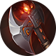
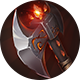

Leão
Leão
 Obsidiana
Obsidiana
 Sacrifício
Sacrifício
 Garra de Lâmina
Garra de Lâmina
 Lava
Lava
 Eco
Eco
Este é um site feito por fã em homenagem ao Champions Legion!


 



Leão
Obsidiana
Sacrifício
Garra de Lâmina
Lava
Eco
Brunhild, assim como Kyouya, tem um dano muito bom para farmar a jungle, além de mobilidade. Aproveite disso para dar invades na jungle inimiga além de proxy. Quando estiver com um farm considerável a frente, force uma luta para pegar kills.
Devido a seu baixo tempo de recarga, pode usar sua ultimate para finalizar um monstro da selva com muita vida mais rápido ou até mesmo para limpar a wave e voltar a andar pelo mapa.
Lembre-se de que sua ultimate lhe deixa imune a controle. Use-a na hora certa para evitar o controle de grupo inimigo.
Aproveite do early game de Brunhild, é onde ela tem mais dano. Late game a campeã perde consideravelmente seu potencial de dano.
Ordem de compra dos itens: Inicie com a faca de caça( ), compre o capacete de patrulheiro(
), compre o capacete de patrulheiro( ). Compre as botas sônicas e feche o capacete de unicórnio após a arma de umbra. Pode comprar os demais itens na ordem. O capacete pode ser substituído pela capa do profeta, se houver necessidade. Vale ressaltar que itens de defesa devem ser comprados mediante a necessidade. Compre itens que sirvam para tankar o dano mais forte do time inimigo.
). Compre as botas sônicas e feche o capacete de unicórnio após a arma de umbra. Pode comprar os demais itens na ordem. O capacete pode ser substituído pela capa do profeta, se houver necessidade. Vale ressaltar que itens de defesa devem ser comprados mediante a necessidade. Compre itens que sirvam para tankar o dano mais forte do time inimigo.
Ordem de upgrade das habilidades: 3ª → 1ª → 2ª.